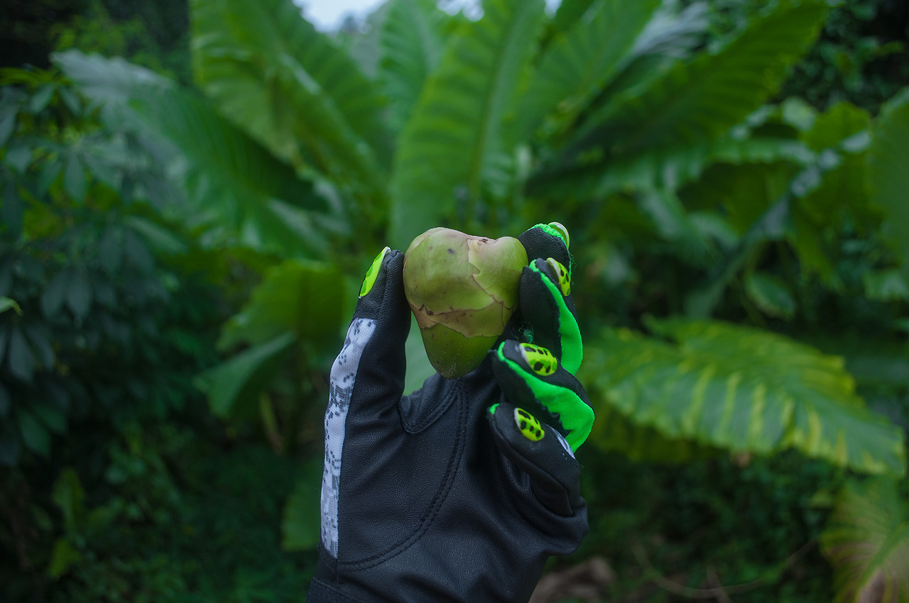

TSUNAMII.NET//GARDENCLUB
KaiAltmann
GardenClub
TSUNAMII.NET
I'm gaining a really unique perspective on the world. Because those national systems of images are so big, it's really hard to deconstruct them. One of the only ways you can really get a view on them is to travel and leave them, see their limits.
-KAI ALTMANN
In a weird way Kai Altmann and Charles Lim Yi Yong are very linked in what they are exploring through their art, one main way is by travel,,, Kai Altmann considers themselves a digital nomad constantly moving while also being involved online, and Charles Lim Yi Yong wanted to traverse land while also being online the whole time
Also both are interested in non western ways of approaching the internet and how non western world countries are involved with the web

This is a piece from Kai Altmann's ongoing series Soft Mobility, exploring the relationship between off the grid objects, what products are available based on geographical location, and who controls these availabilities
-KAI ALTMANN
In a weird way Kai Altmann and Charles Lim Yi Yong are very linked in what they are exploring through their art, one main way is by travel,,, Kai Altmann considers themselves a digital nomad constantly moving while also being involved online, and Charles Lim Yi Yong wanted to traverse land while also being online the whole time Also both are interested in non western ways of approaching the internet and how non western world countries are involved with the web
This is a piece from Kai Altmann's ongoing series Soft Mobility, exploring the relationship between off the grid objects, what products are available based on geographical location, and who controls these availabilities